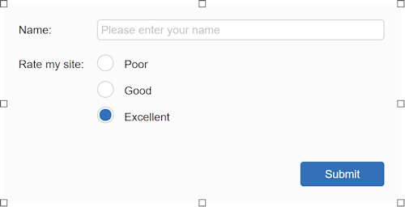

Creating a Form
A form provides a way you to collect information from the people who view your web pages. A viewer enters data or makes choices among several options and then submits the form. The results can be sent to you by email. If your web server has the right software, you can save the form results in a database.
How do I create a form in WYSIWYG Web Builder?
Drag the Form container from the toolbox to the page.
A form provides a way you to collect information from the people who view your web pages. A viewer enters data or makes choices among several options and then submits the form. The results can be sent to you by email. If your web server has the right software, you can save the form results in a database.
How do I create a form in WYSIWYG Web Builder?
Drag the Form container from the toolbox to the page.
Design your form by adding some Form controls to the form. WYSIWYG Web Builder includes a wide range of form controls like:·buttons, checkboxes, radio buttons, editbox etc.You can also make text, images and other objects part of the form.

The input field for the name is an Editbox, where the name is set to: Name.
The 3 controls for the rating are Radio Buttons. All radio buttons have the same Group Name: Rating, so only one item can be selected.
The Type property of the Button is set to submit, so when the button is clicked the form will be submitted.
And the last step is to setup the properties of the form.
The 3 controls for the rating are Radio Buttons. All radio buttons have the same Group Name: Rating, so only one item can be selected.
The Type property of the Button is set to submit, so when the button is clicked the form will be submitted.
And the last step is to setup the properties of the form.
PHP Form Processor script
Although you can use mailto:your.email@email.com to send the form data by email, this is not a very reliable solution because it depends on the browser configuration which is different for each user. See also this related FAQ: https://www.wysiwygforum.tk/viewtopic.php?t=135
However one of the great features of WYSIWYG Web Builder is that is has a built-in PHP form processor script. This implements all the basic features of a form processor like sending an email, saving it to a file on the server or even store it in a MySQL database!
Enable Use Built-in PHP form processor script and fill in all required properties.
Email address (required)
The email address where the results of the form will be send to. You can only specific one email address in this field!
Click the 'More' button to specify multiple email addresses (CC/BCC). Use commas to separate email addresses.
Subject (required)
The subject of the email message.
Message (required)
A short message that will be added to submitted data.
Success page (required)
The page that the user will be redirected to after the data has been submitted (after the 'submit' button has been pressed).
Error page (required)
The page that the user will be redirected to if an error occurred while processing the data.
The built-in form processor has many other features like saving the data to a MySQL database or uploading files.
See the help for more details about this or click the 'Advanced' button to explore them;)
Note that you can also use the built-in Form Wizard to create forms in a matter of minutes!
Custom or third party form processing
Of course you can also write your own script to process the submitted form data or use a third party form processing service.
In that case make sure 'Use Built-in PHP form processor script' is off and set the URL of the form script in the 'Action' field.
What if form does not work?
The built-in form processor has been tested extensively and has been used successfully by many users. It should work on any server that supports PHP. Most problems are caused by wrong settings or server sided issues.
For an overview of common issues and solutions please se: Frequently Asked Questions about Forms
See the help for more details about this or click the 'Advanced' button to explore them;)
Note that you can also use the built-in Form Wizard to create forms in a matter of minutes!
Custom or third party form processing
Of course you can also write your own script to process the submitted form data or use a third party form processing service.
In that case make sure 'Use Built-in PHP form processor script' is off and set the URL of the form script in the 'Action' field.
What if form does not work?
The built-in form processor has been tested extensively and has been used successfully by many users. It should work on any server that supports PHP. Most problems are caused by wrong settings or server sided issues.
For an overview of common issues and solutions please se: Frequently Asked Questions about Forms
The text labels (Name, Rate my site, Poor, Good and Excellent) on the form were created using are Label objects.
With the 'For' property of the Label you can link the label to the input field so when you click on the label the input field will be selected.
With the 'For' property of the Label you can link the label to the input field so when you click on the label the input field will be selected.
Note:
Its important that all form elements are inside the form area, otherwise the data will not be sent!
Its important that all form elements are inside the form area, otherwise the data will not be sent!
Now let's create a simple feedback form.
Important:
When you are using the built-in form processor then make sure the File Extension of the page in page properties is set to 'php'!
Now to test the form you must publish it to the web server.
When you are using the built-in form processor then make sure the File Extension of the page in page properties is set to 'php'!
Now to test the form you must publish it to the web server.